iOS Unit Testing and UI Testing Tutorial¶
Apr 14 2021, Swift 5, iOS 14, Xcode 12
Learn how to add unit tests and UI tests to your iOS apps, and how you can check on your code coverage. By David Piper.
4.7(39)·4 Reviews
Update note: David Piper updated this tutorial for Xcode 12.4, Swift 5.3 and iOS 14. Audrey Tam wrote the original.
iOS unit testing isn’t glamorous, but since tests keep your sparkling app from turning into a bug-ridden piece of junk, it’s necessary. If you’re reading this tutorial, you already know you should write tests for your code and UI, but you may not know how.
You may have a working app, but you want to test changes you’re making to extend the app. Maybe you already have tests written, but aren’t sure whether they’re the right tests. Or, you’ve started working on a new app and want to test as you go.
This tutorial will show you how to:
- Use Xcode’s Test navigator to test an app’s model and asynchronous methods
- Fake interactions with library or system objects by using stubs and mocks
- Test UI and performance
- Use the code coverage tool
Along the way, you’ll pick up some of the vocabulary used by testing ninjas.
Getting Started¶
Start by downloading the project materials using the Download Materials button at the top or bottom of this tutorial. It includes the project BullsEye that’s based on a sample app in UIKit Apprentice. It’s a simple game of chance and luck. The game logic is in the BullsEyeGameclass, which you’ll test during this tutorial.
Figuring out What to Test¶
Before writing any tests, it’s important to know the basics. What do you need to test?
If your goal is to extend an existing app, you should first write tests for any component you plan to change.
Generally, tests should cover:
- Core functionality: Model classes and methods and their interactions with the controller
- The most common UI workflows
- Boundary conditions
- Bug fixes
Understanding Best Practices for Testing¶
The acronym FIRST describes a concise set of criteria for effective unit tests. Those criteria are:
- Fast: Tests should run quickly.
- Independent/Isolated: Tests shouldn’t share state with each other.
- Repeatable: You should obtain the same results every time you run a test. External data providers or concurrency issues could cause intermittent failures.
- Self-validating: Tests should be fully automated. The output should be either “pass” or “fail”, rather than relying on a programmer’s interpretation of a log file.
- Timely: Ideally, you should write your tests before writing the production code they test. This is known as test-driven development.
Following the FIRST principles will keep your tests clear and helpful, instead of turning into roadblocks for your app.
Unit Testing in Xcode¶
The Test navigator provides the easiest way to work with tests. You’ll use it to create test targets and run tests against your app.
Creating a Unit Test Target¶
Open the BullsEye project and press Command-6 to open the Test navigator.
Click + in the lower-left corner, then select New Unit Test Target… from the menu:
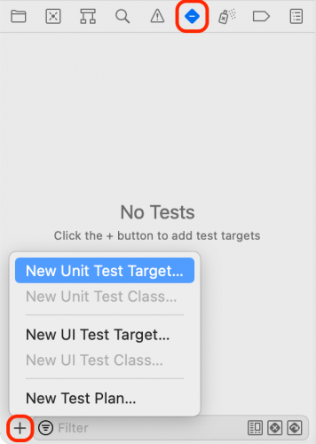
Accept the default name, BullsEyeTests, and enter com.raywenderlich as the Organization Identifier. When the test bundle appears in the Test navigator, expand it by clicking the disclosure triangle and click BullsEyeTests to open it in the editor.

The default template imports the testing framework, XCTest, and defines a BullsEyeTestssubclass of XCTestCase, with setUpWithError(), tearDownWithError() and example test methods.
You can run the tests in three ways:
- Product ▸ Test or Command-U. Both of these run all test classes.
- Click the arrow button in the Test navigator.
- Click the diamond button in the gutter.
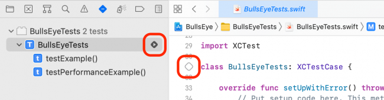
You can also run an individual test method by clicking its diamond in the Test navigator or in the gutter.
Try the different ways to run tests to get a feeling for how long it takes and what it looks like. The sample tests don’t do anything yet, so they run really fast!
When all tests have succeeded, the diamonds will turn green and show check marks. Click the gray diamond at the end of testPerformanceExample() to open the Performance Result:
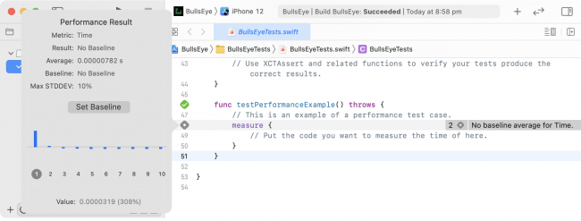
You don’t need testPerformanceExample() or testExample() for this tutorial, so delete them.
Using XCTAssert to Test Models¶
First, you’ll use XCTAssert functions to test a core function of BullsEye’s model: Does BullsEyeGame correctly calculate the score for a round?
In BullsEyeTests.swift, add this line below import XCTest:
@testable import BullsEye
This gives the unit tests access to the internal types and functions in BullsEye.
At the top of BullsEyeTests, add this property:
var sut: BullsEyeGame!
This creates a placeholder for BullsEyeGame, which is the System Under Test (SUT), or the object this test case class is concerned with testing.
Next, replace the contents of setUpWithError() with this:
try super.setUpWithError()
sut = BullsEyeGame()
This creates BullsEyeGame at the class level, so all the tests in this test class can access the SUT object’s properties and methods.
Before you forget, release your SUT object in tearDownWithError(). Replace its contents with:
sut = nil
try super.tearDownWithError()
Note: It’s good practice creating the SUT in setUpWithError() and releasing it in tearDownWithError() to ensure every test starts with a clean slate. For more discussion, check out Jon Reid’s post on the subject.
Writing Your First Test¶
Now you’re ready to write your first test!
Add the following code to the end of BullsEyeTests to test whether you calculate the expected score for a guess:
func testScoreIsComputedWhenGuessIsHigherThanTarget() {
// given
let guess = sut.targetValue + 5
// when
sut.check(guess: guess)
// then
XCTAssertEqual(sut.scoreRound, 95, "Score computed from guess is wrong")
}
A test method’s name always begins with test, followed by a description of what it tests.
It’s good practice to format the test into given, when and then sections:
- Given: Here, you set up any values needed. In this example, you create a
guessvalue so you can specify how much it differs fromtargetValue. - When: In this section, you’ll execute the code being tested: Call
check(guess:). - Then: This is the section where you’ll assert the result you expect with a message that prints if the test fails. In this case,
sut.scoreRoundshould equal 95, since it’s 100 − 5.
Run the test by clicking the diamond icon in the gutter or in the Test navigator. This builds and runs the app, and the diamond icon will change to a green check mark! You’ll also see a momentary pop-up appear over Xcode that also indicates success that looks like this:
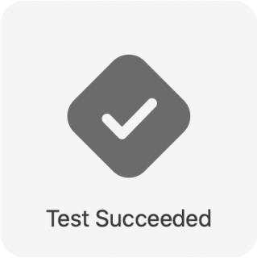
Note: To see a full list of XCTestAssertions, go to Apple’s Assertions Listed by Category.
Debugging a Test¶
There’s a bug built into BullsEyeGame on purpose, and you’ll practice finding it now. To see the bug in action, you’ll create a test that subtracts 5 from targetValue in the given section and leaves everything else the same.
Add the following test:
func testScoreIsComputedWhenGuessIsLowerThanTarget() {
// given
let guess = sut.targetValue - 5
// when
sut.check(guess: guess)
// then
XCTAssertEqual(sut.scoreRound, 95, "Score computed from guess is wrong")
}
The difference between guess and targetValue is still 5, so the score should still be 95.
In the Breakpoint navigator, add a Test Failure Breakpoint. This stops the test run when a test method posts a failure assertion.
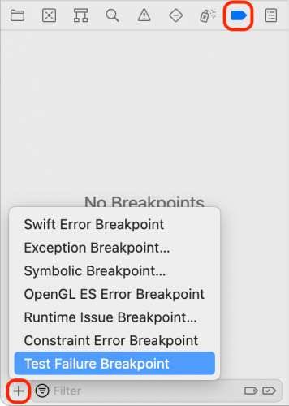
Run your test, and it should stop at the XCTAssertEqual line with a test failure.
Inspect sut and guess in the debug console:
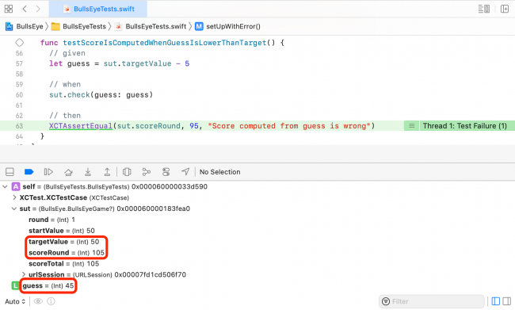
guess is targetValue − 5 but scoreRound is 105, not 95!
To investigate further, use the normal debugging process: Set a breakpoint at the whenstatement and also one in BullsEyeGame.swift, inside check(guess:), where it creates difference. Then, run the test again, and step over the let difference statement to inspect the value of difference in the app:
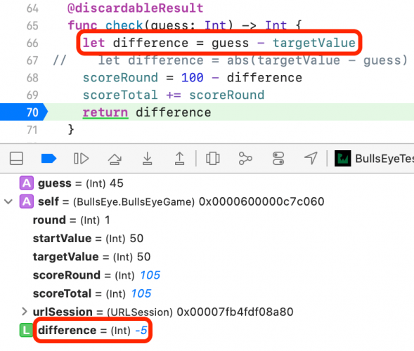
The problem is that difference is negative, so the score is 100 − (−5). To fix this, you should use the absolute value of difference. In check(guess:), uncomment the correct line and delete the incorrect one.
Remove the two breakpoints and run the test again to confirm that it now succeeds.
Using XCTestExpectation to Test Asynchronous Operations¶
Now that you’ve learned how to test models and debug test failures, it’s time to move on to testing asynchronous code.
BullsEyeGame uses URLSession to get a random number as a target for the next game. URLSession methods are asynchronous: They return right away but don’t finish running until later. To test asynchronous methods, use XCTestExpectation to make your test wait for the asynchronous operation to complete.
Asynchronous tests are usually slow, so you should keep them separate from your faster unit tests.
Create a new unit test target named BullsEyeSlowTests. Open the brand new test class BullsEyeSlowTests and import the BullsEye app module just below the existing importstatement:
@testable import BullsEye
All the tests in this class use the default URLSession to send requests, so declare sut, create it in setUpWithError() and release it in tearDownWithError(). To do this, replace the contents of BullsEyeSlowTests with:
var sut: URLSession!
override func setUpWithError() throws {
try super.setUpWithError()
sut = URLSession(configuration: .default)
}
override func tearDownWithError() throws {
sut = nil
try super.tearDownWithError()
}
Next, add this asynchronous test:
// Asynchronous test: success fast, failure slow
func testValidApiCallGetsHTTPStatusCode200() throws {
// given
let urlString =
"http://www.randomnumberapi.com/api/v1.0/random?min=0&max=100&count=1"
let url = URL(string: urlString)!
// 1
let promise = expectation(description: "Status code: 200")
// when
let dataTask = sut.dataTask(with: url) { _, response, error in
// then
if let error = error {
XCTFail("Error: \(error.localizedDescription)")
return
} else if let statusCode = (response as? HTTPURLResponse)?.statusCode {
if statusCode == 200 {
// 2
promise.fulfill()
} else {
XCTFail("Status code: \(statusCode)")
}
}
}
dataTask.resume()
// 3
wait(for: [promise], timeout: 5)
}
This test checks that sending a valid request returns a 200 status code. Most of the code is the same as what you’d write in the app, with these additional lines:
- expectation(description:): Returns
XCTestExpectation, stored inpromise.descriptiondescribes what you expect to happen. - promise.fulfill(): Call this in the success condition closure of the asynchronous method’s completion handler to flag that the expectation has been met.
- wait(for:timeout:): Keeps the test running until all expectations are fulfilled or the
timeoutinterval ends, whichever happens first.
Run the test. If you’re connected to the internet, the test should take about a second to succeed after the app loads in the simulator.
Failing Fast¶
Failure hurts, but it doesn’t have to take forever.
To experience failure, simply change the URL in testValidApiCallGetsHTTPStatusCode200() to an invalid one:
let url = URL(string: "http://www.randomnumberapi.com/test")!
Run the test. It fails, but it takes the full timeout interval! This is because you assumed the request would always succeed, and that’s where you called promise.fulfill(). Since the request failed, it finished only when the timeout expired.
You can improve this and make the test fail faster by changing the assumption. Instead of waiting for the request to succeed, wait only until the asynchronous method’s completion handler is invoked. This happens as soon as the app receives a response — either OK or error — from the server, which fulfills the expectation. Your test can then check whether the request succeeded.
To see how this works, create a new test.
But first, fix the previous test by undoing the change you made to url.
Then, add the following test to your class:
func testApiCallCompletes() throws {
// given
let urlString = "http://www.randomnumberapi.com/test"
let url = URL(string: urlString)!
let promise = expectation(description: "Completion handler invoked")
var statusCode: Int?
var responseError: Error?
// when
let dataTask = sut.dataTask(with: url) { _, response, error in
statusCode = (response as? HTTPURLResponse)?.statusCode
responseError = error
promise.fulfill()
}
dataTask.resume()
wait(for: [promise], timeout: 5)
// then
XCTAssertNil(responseError)
XCTAssertEqual(statusCode, 200)
}
The key difference is that simply entering the completion handler fulfills the expectation, and this only takes about a second to happen. If the request fails, the then assertions fail.
Run the test. It should now take about a second to fail. It fails because the request failed, not because the test run exceeded timeout.
Fix url and then run the test again to confirm that it now succeeds.
Failing Conditionally¶
In some situations, executing a test doesn’t make much sense. For example, what should happen when testValidApiCallGetsHTTPStatusCode200() runs without a network connection? Of course, it shouldn’t pass, because it won’t receive a 200 status code. But it also shouldn’t fail, because it didn’t test anything.
Fortunately, Apple introduced XCTSkip to skip a test when preconditions fail. Add the following line below the declaration of sut:
let networkMonitor = NetworkMonitor.shared
NetworkMonitor wraps NWPathMonitor, providing a convenient way to check for a network connection.
In testValidApiCallGetsHTTPStatusCode200(), add XCTSkipUnless at the beginning of the test:
try XCTSkipUnless(
networkMonitor.isReachable,
"Network connectivity needed for this test.")
XCTSkipUnless(_:_:) skips the test when no network is reachable. Check this by disabling your network connection and running the test. You’ll see a new icon in the gutter next to the test, indicating that the test neither passed nor failed.
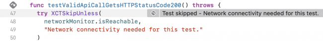
Enable your network connection again and rerun the test to make sure that it still succeeds under normal conditions. Add the same code to the beginning of testApiCallCompletes().
Faking Objects and Interactions¶
Asynchronous tests give you confidence that your code generates correct input to an asynchronous API. You might also want to test that your code works correctly when it receives input from URLSession, or that it correctly updates the UserDefaults database or an iCloud container.
Most apps interact with system or library objects — objects you don’t control. Tests that interact with these objects can be slow and unrepeatable, violating two of the FIRST principles. Instead, you can fake the interactions by getting input from stubs or by updating mock objects.
Employ fakery when your code has a dependency on a system or library object. Do this by creating a fake object to play that part and injecting this fake into your code. Dependency Injection by Jon Reid describes several ways to do this.
Faking Input From Stub¶
Now, check that the app’s getRandomNumber(completion:) correctly parses data downloaded by the session. You’ll fake the session of BullsEyeGame with stubbed data.
Go to the Test navigator, click + and choose New Unit Test Class…. Give it the name BullsEyeFakeTests, save it in the BullsEyeTests directory and set the target to BullsEyeTests.
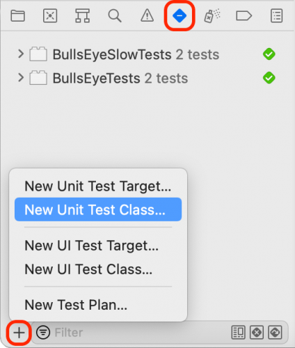
Import the BullsEye app module just below the import statement:
@testable import BullsEye
Now, replace the contents of BullsEyeFakeTests with this:
var sut: BullsEyeGame!
override func setUpWithError() throws {
try super.setUpWithError()
sut = BullsEyeGame()
}
override func tearDownWithError() throws {
sut = nil
try super.tearDownWithError()
}
This declares the SUT, which is BullsEyeGame, creates it in setUpWithError() and releases it in tearDownWithError().
The BullsEye project contains the supporting file URLSessionStub.swift. This defines a simple protocol, named URLSessionProtocol, with a method to create a data task with a URL. It also defines URLSessionStub, which conforms to this protocol. Its initializer lets you define the data, response and error the data task should return.
To set up the fake, go to BullsEyeFakeTests.swift and add a new test:
func testStartNewRoundUsesRandomValueFromApiRequest() {
// given
// 1
let stubbedData = "[1]".data(using: .utf8)
let urlString =
"http://www.randomnumberapi.com/api/v1.0/random?min=0&max=100&count=1"
let url = URL(string: urlString)!
let stubbedResponse = HTTPURLResponse(
url: url,
statusCode: 200,
httpVersion: nil,
headerFields: nil)
let urlSessionStub = URLSessionStub(
data: stubbedData,
response: stubbedResponse,
error: nil)
sut.urlSession = urlSessionStub
let promise = expectation(description: "Value Received")
// when
sut.startNewRound {
// then
// 2
XCTAssertEqual(self.sut.targetValue, 1)
promise.fulfill()
}
wait(for: [promise], timeout: 5)
}
This test does two things:
- You set up the fake data and response and create the fake session object. Finally, inject the fake session into the app as a property of
sut. - You still have to write this as an asynchronous test because the stub is pretending to be an asynchronous method. Check whether calling
startNewRound(completion:)parses the fake data by comparingtargetValuewith the stubbed fake number.
Run the test. It should succeed pretty quickly because there isn’t any real network connection!
Faking an Update to Mock Object¶
The previous test used a stub to provide input from a fake object. Next, you’ll use a mock object to test that your code correctly updates UserDefaults.
This app has two game styles. The user can either:
- Move the slider to match the target value.
- Guess the target value from the slider position.
A segmented control in the lower-right corner switches the game style and saves it in UserDefaults.
Your next test checks that the app correctly saves the gameStyle property.
Add a new test class to the target BullsEyeTests and name it BullsEyeMockTests. Add the following below the import statement:
@testable import BullsEye
class MockUserDefaults: UserDefaults {
var gameStyleChanged = 0
override func set(_ value: Int, forKey defaultName: String) {
if defaultName == "gameStyle" {
gameStyleChanged += 1
}
}
}
MockUserDefaults overrides set(_:forKey:) to increment gameStyleChanged. Similar tests often set a Bool variable, but incrementing Int gives you more flexibility. For example, your test could check that the app only calls the method once.
Next, in BullsEyeMockTests declare the SUT and the mock object:
var sut: ViewController!
var mockUserDefaults: MockUserDefaults!
Replace setUpWithError() and tearDownWithError() with:
override func setUpWithError() throws {
try super.setUpWithError()
sut = UIStoryboard(name: "Main", bundle: nil)
.instantiateInitialViewController() as? ViewController
mockUserDefaults = MockUserDefaults(suiteName: "testing")
sut.defaults = mockUserDefaults
}
override func tearDownWithError() throws {
sut = nil
mockUserDefaults = nil
try super.tearDownWithError()
}
This creates the SUT and the mock object and injects the mock object as a property of the SUT.
Now, replace the two default test methods in the template with this:
func testGameStyleCanBeChanged() {
// given
let segmentedControl = UISegmentedControl()
// when
XCTAssertEqual(
mockUserDefaults.gameStyleChanged,
0,
"gameStyleChanged should be 0 before sendActions")
segmentedControl.addTarget(
sut,
action: #selector(ViewController.chooseGameStyle(_:)),
for: .valueChanged)
segmentedControl.sendActions(for: .valueChanged)
// then
XCTAssertEqual(
mockUserDefaults.gameStyleChanged,
1,
"gameStyle user default wasn't changed")
}
The when assertion is that the gameStyleChanged flag is 0 before the test method changes the segmented control. So, if the then assertion is also true, it means set(_:forKey:) was called exactly once.
Run the test. It should succeed.
UI Testing in Xcode¶
UI testing lets you test interactions with the user interface. UI testing works by finding an app’s UI objects with queries, synthesizing events and then sending the events to those objects. The API enables you to examine a UI object’s properties and state to compare them against the expected state.
In the Test navigator, add a new UI Test Target. Check that the Target to be Tested is BullsEye, and then accept the default name BullsEyeUITests.
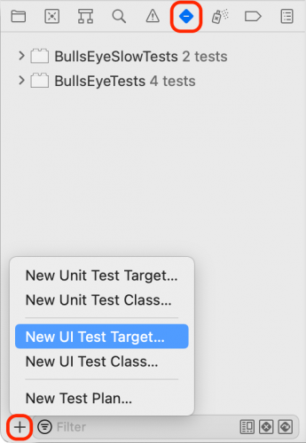
Open BullsEyeUITests.swift and add this property at the top of the BullsEyeUITestsclass:
var app: XCUIApplication!
Remove tearDownWithError() and replace the contents of setUpWithError() with the following:
try super.setUpWithError()
continueAfterFailure = false
app = XCUIApplication()
app.launch()
Remove the two existing tests and add a new one called testGameStyleSwitch().
func testGameStyleSwitch() {
}
Open a new line in testGameStyleSwitch() and click the red Record button at the bottom of the editor window:
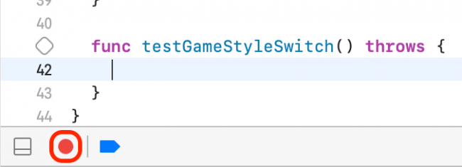
This opens the app in the simulator in a mode that records your interactions as test commands. Once the app loads, tap the Slide segment of the game style switch and the top label. Click the Xcode Record button again to stop the recording.
You now have the following three lines in testGameStyleSwitch():
let app = XCUIApplication()
app.buttons["Slide"].tap()
app.staticTexts["Get as close as you can to: "].tap()
The Recorder has created code to test the same actions you tested in the app. Send a tap to the game style segmented control and the top label. You’ll use those as a base to create your own UI test. If you see any other statements, just delete them.
The first line duplicates the property you created in setUpWithError(), so delete that line. You don’t need to tap anything yet, so also delete .tap() at the end of lines 2 and 3. Now, open the little menu next to ["Slide"] and select segmentedControls.buttons["Slide"].
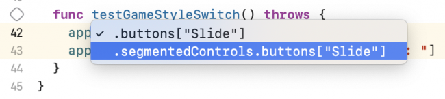
You should be left with:
app.segmentedControls.buttons["Slide"]
app.staticTexts["Get as close as you can to: "]
Tap any other objects to let the recorder help you find the code you can access in your tests. Now, replace those lines with this code to create a given section:
// given
let slideButton = app.segmentedControls.buttons["Slide"]
let typeButton = app.segmentedControls.buttons["Type"]
let slideLabel = app.staticTexts["Get as close as you can to: "]
let typeLabel = app.staticTexts["Guess where the slider is: "]
Now that you have names for the two buttons in the segmented control and the two possible top labels, add the following code below:
// then
if slideButton.isSelected {
XCTAssertTrue(slideLabel.exists)
XCTAssertFalse(typeLabel.exists)
typeButton.tap()
XCTAssertTrue(typeLabel.exists)
XCTAssertFalse(slideLabel.exists)
} else if typeButton.isSelected {
XCTAssertTrue(typeLabel.exists)
XCTAssertFalse(slideLabel.exists)
slideButton.tap()
XCTAssertTrue(slideLabel.exists)
XCTAssertFalse(typeLabel.exists)
}
This checks whether the correct label exists when you tap() on each button in the segmented control. Run the test — all the assertions should succeed.
Testing Performance¶
From Apple’s documentation:
A performance test takes a block of code that you want to evaluate and runs it ten times, collecting the average execution time and the standard deviation for the runs. The averaging of these individual measurements form a value for the test run that can then be compared against a baseline to evaluate success or failure.
It’s simple to write a performance test: Just place the code you want to measure into the closure of measure(). Additionally, you can specify multiple metrics to measure.
Add the following test to BullsEyeTests:
func testScoreIsComputedPerformance() {
measure(
metrics: [
XCTClockMetric(),
XCTCPUMetric(),
XCTStorageMetric(),
XCTMemoryMetric()
]
) {
sut.check(guess: 100)
}
}
This test measures multiple metrics:
XCTClockMetricmeasures elapsed time.XCTCPUMetrickeeps track of CPU activity including CPU time, cycles and number of instructions.XCTStorageMetrictells you how much data the tested code writes to storage.XCTMemoryMetrictracks the amount of used physical memory.
Run the test, then click the icon that appears next to the beginning of the measure() trailing closure to see the statistics. You can change the selected metric next to Metric.

Click Set Baseline to set a reference time. Run the performance test again and view the result — it might be better or worse than the baseline. The Edit button lets you reset the baseline to this new result.
Baselines are stored per device configuration, so you can have the same test executing on several different devices. Each can maintain a different baseline dependent upon the specific configuration’s processor speed, memory, etc.
Any time you make changes to an app that might impact the performance of the method being tested, run the performance test again to see how it compares to the baseline.
Enabling Code Coverage¶
The code coverage tool tells you what app code your tests are actually running, so you know what parts of the app aren’t tested — at least, not yet.
To enable code coverage, edit the scheme’s Test action and check the Gather coverage forcheckbox under the Options tab:
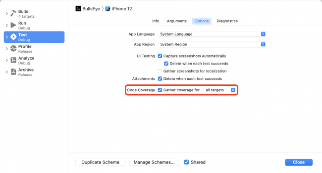
Run all tests with Command-U, then open the Report navigator with Command-9. Select Coverage under the top item in that list:
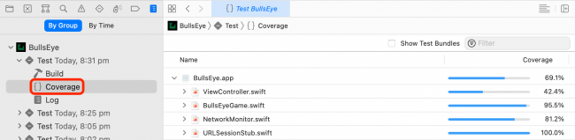
Click the disclosure triangle to see the list of functions and closures in BullsEyeGame.swift:
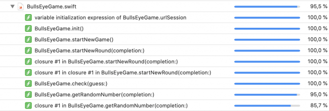
Scroll to getRandomNumber(completion:) to see that coverage is 95.0%.
Click the arrow button for this function to open the source file to the function. As you mouse over the coverage annotations in the right sidebar, sections of code highlight green or red:
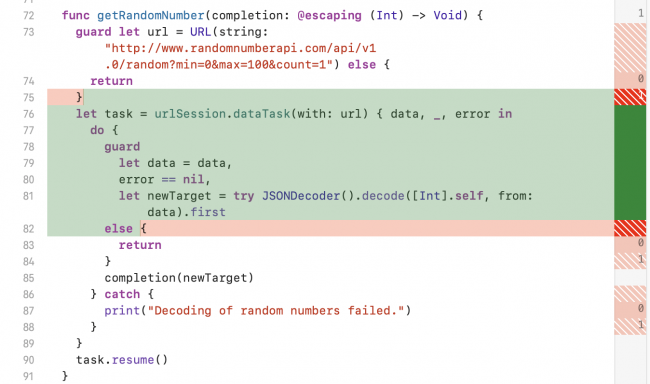
The coverage annotations show how many times a test hits each code section. Sections that weren’t called are highlighted in red.
Achieving 100% Coverage?¶
How hard should you strive for 100% code coverage? Just Google “100% unit test coverage”, and you’ll find a range of arguments for and against this, along with debate over the very definition of “100% coverage”. Arguments against it say the last 10%–15% isn’t worth the effort. Arguments for it say the last 10%–15% is the most important, because it’s so hard to test. Google “hard to unit test bad design” to find persuasive arguments that untestable code is a sign of deeper design problems.
Where to Go From Here?¶
You can download the completed version of the project using the Download Materials button at the top or bottom of this tutorial. Continue developing your skills by adding additional tests of your own.
You now have some great tools to use in writing tests for your projects. I hope this iOS Unit Testing and UI Testing tutorial has given you the confidence to test all the things!
Here are some resources for further study:
-
WWDC has several videos on the topic of testing. Two good ones from WWDC17 are: Engineering for Testability and Testing Tips & Tricks.
-
The next step is automation: Continuous Integration and Continuous Delivery. Start with our tutorials
Continuous Integration With GitHub, Fastlane & Jenkins and Xcode Server for iOS: Getting Started.
Then, have a look at Apple’s Automating the Test Process with Xcode Server and xcodebuild, and Wikipedia’s continuous delivery article, which draws on expertise from ThoughtWorks.
-
If you already have an app but haven’t written tests for it yet, you might want to refer to Working Effectively with Legacy Code by Michael Feathers, because code without tests islegacy code!
-
Jon Reid’s Quality Coding sample app archives are great for learning more about Test-Driven Development.
We hope you enjoyed this tutorial, and if you have any questions or comments, please join the forum discussion below!